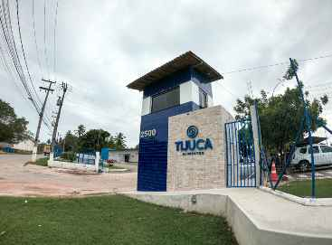
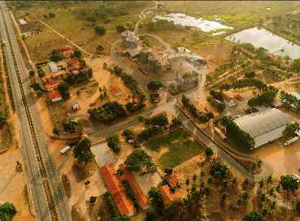
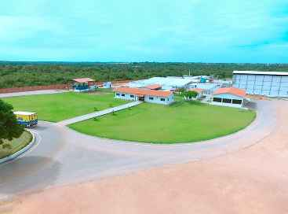

A TIJUCA ALIMENTOS é uma empresa cearense que atua há mais de 50 anos no mercado de alimentos, comercializando Ovos, Frangos, Queijo nos estados do Ceará, Piauí e Maranhão, oferecendo qualidade, sabor e carinho para milhares de famílias como a nossa.
 2022.png)
Quem Somos
Nossa História
A TIJUCA ALIMENTOS é uma empresa cearense que atua há mais de 50 anos no mercado de alimentos, com sede na Rodovia CE 040, km 67 – Beberibe – CE e escritório na Avenida Dionísio Leonel Alencar, 2500, Messejana – Fortaleza-CE, desde 1969 dedicados a produção e comercialização de Ovos, Frangos, Queijo nos estados do Ceará, Piauí e Maranhão, oferecendo qualidade, sabor e carinho para milhares de famílias como a nossa.
Para isso dispõe de uma moderna fábrica de rações e com uma classificação dotada de modernos e automatizados equipamentos. Somos a única empresa do segmento no estado que possui abatedouro próprio com capacidade de abate de 100% de sua produção. Nossa logística conta com uma frota própria preparada para atender as necessidades de nossos clientes.
A Tijuca Alimentos trabalha voltada para a satisfação de seus clientes e se consolidou no mercado por sua forte atuação junto ao comércio varejista, supermercados, mercadinhos, hoteis, restaurantes, padarias, hospitais e atacadistas.
- Missão Desenvolver, Produzir e Comercializar alimentos de alta qualidade, com cuidado e carinho, crescendo e inovando em harmonia com a comunidade e o meio ambiente, proporcionando a satisfação e saudabilidade das pessoas.
- Visão Sermos reconhecidos como a mais querida e confiável empresa de alimentos, oferecendo aos seus colaboradores, clientes e parceiros uma relação sustentável, com foco no crescimento, rentabilidade e responsabilidade socioambiental.
- Valores Fé em Deus, Carinho, Humildade, Inovação, Qualidade em tudo que produz, Sabor, Trabalho, Família, Valorização e desenvolvimento de pessoas, Responsabilidade socioambiental.
Nossas Sedes
Messejana
Administrativo
Av. Dionísio Leonel Alencar, 2500 Messejana – Fortaleza – Ceará CEP 60870-576 Tel: +55 85 3229-9777Beberibe
Matriz
CE-040 – KM 67 – Zona Rural Beberibe – CE CEP 62840-000Cascavel
Abatedouro
CE-040 – KM 41 – Estrada do Zumbi – SN Talasca – Cascavel – CE CEP 62850-000